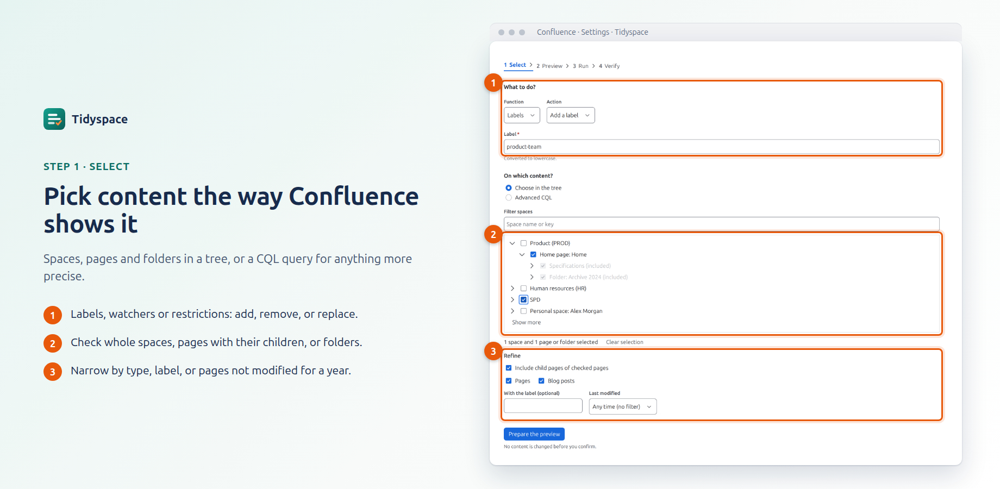
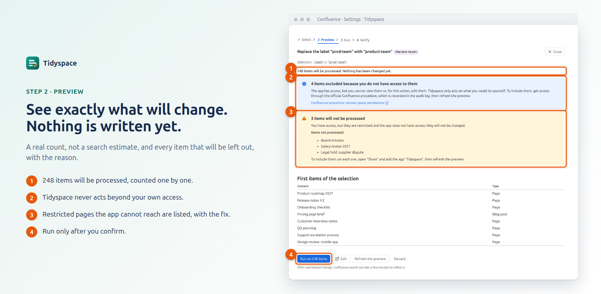
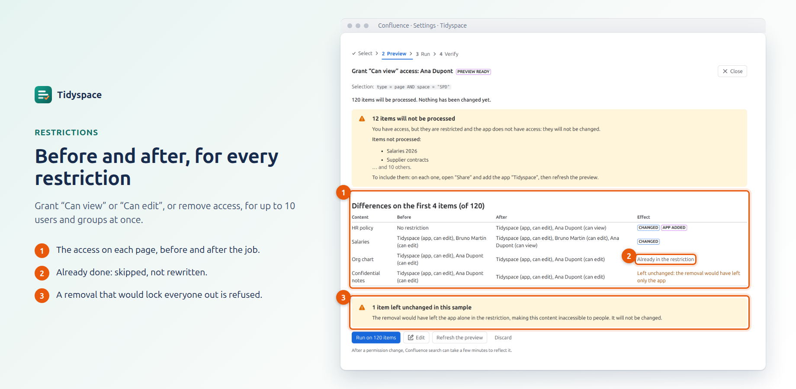
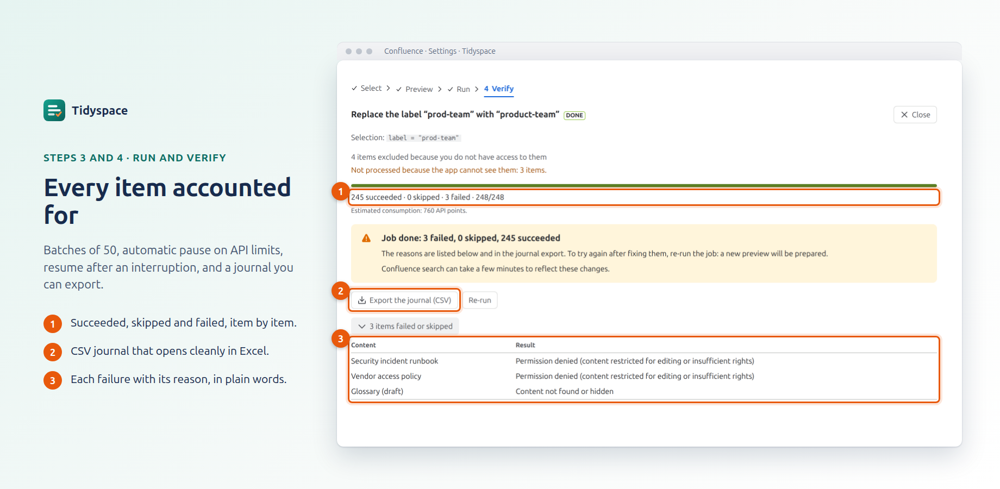
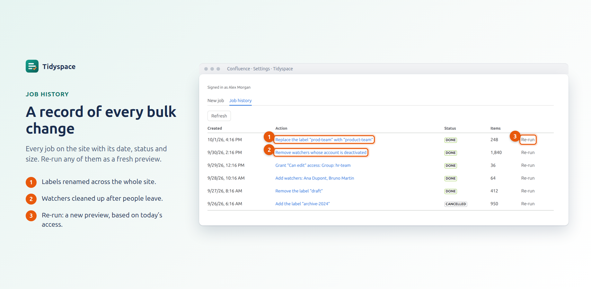

Bulk changes to Confluence, with a preview first
Tidyspace gives Confluence administrators the bulk actions Confluence does not have: rename a label across the whole site, clean up watchers, grant or remove page access in one job. You see exactly what will change before anything is written.

What it does
Labels
Add, remove or replace a label on a selection of pages and blog posts. Rename or merge a label everywhere it is used: one job instead of hundreds of page edits.
Watchers
Add up to 10 people as watchers of a whole space or page tree, remove them, or remove the deactivated accounts that keep cluttering watcher lists after people leave.
Restrictions
Grant “Can view” or “Can edit”, or remove access, for up to 10 users and groups at once. The levels are the ones of the Confluence “Share” dialog, with the access before and after on each page.
Why administrators trust it
Nothing changes before you confirm
Every job starts with a preview: the exact number of items, a sample, and every item that will be left out, with the reason. You run the job only when the preview is right.
Never beyond your own access
Tidyspace acts only on content that you could change yourself. Content you cannot see or edit is excluded and only counted, never shown. To include it, you go through the official Confluence procedure, which is recorded in the audit log.
Built for large sites
Jobs of up to 20,000 items run in batches of 50. They pause on Confluence API limits and resume on their own, can be cancelled at any time, and restart where they stopped after an interruption.
A journal for every item
Succeeded, skipped or failed, with the reason in plain words. Export the journal as CSV: it opens cleanly in Excel, in English or in French.
Runs entirely on Atlassian
Tidyspace is built on Atlassian Forge, with no external server and no outbound connection. Your content never leaves Atlassian’s platform, and the publisher has no access to it.
Safe restrictions
A removal that would leave a page accessible to nobody but the app is refused and reported. Restricted pages the app cannot reach are listed, with the one-step fix.
How it works





Who it is for
Tidyspace is for Confluence administrators of Confluence Cloud sites. It appears in the Confluence administration settings, and every action is checked on the server: people without the Confluence administrator permission cannot use it.
Interface in English and in French, following each person’s Confluence language.
Questions
Can a job be undone?
Not automatically. That is why every job starts with a preview, and why the journal records each item: to revert a label change, run the opposite job (for example, replace the new label with the old one) on the same selection.
Does Tidyspace archive, move or delete pages?
No. Tidyspace changes labels, watchers and restrictions only. It never moves, archives, deletes or edits the content of a page.
Why are some pages “not processed because the app cannot see them”?
A page restricted for viewing is invisible to every app that is not part of the restriction. Tidyspace lists these pages in the preview; to include them, add the app “Tidyspace” to the page through “Share”, then refresh the preview. More in the documentation.
What data does Tidyspace keep?
Only what a job needs: identifiers and titles of the selected items, the people and groups chosen, and the result of each item. It stays in the app’s storage on Atlassian’s platform, in the same location as your Confluence data, and is deleted 90 days after the job’s last activity. See the privacy policy.